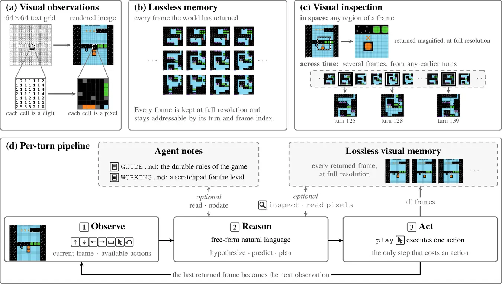
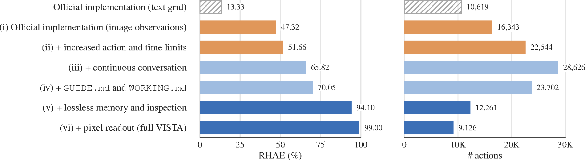

Models that act: over tools, over computers, over long horizons.
1 papers · 5 avg citations
Written by Junkun Yuan.
Click here to go back to main contents.
Table of contents ▶
Papers are displayed in reverse chronological order. High-impact or inspiring works are highlighted in red.
VISTA: A Visual Harness for Reasoning in an Interactive World
MIT
arXiv, 2026
Oct 01, 2026 VISTA (5) code (249)
Lossless visual memory plus model-directed inspection turn a multimodal model into an agent that clears all 25 public ARC-AGI-3 games.
Insight. Encode-once perception caps an agent: keep raw pixels addressable, spend context on reasoning, ablate the harness like a model.

Visual observation (§3.1, Fig. 3a). A 512×512 PNG, the grid upscaled 8×, costs ~308 image tokens; the 64×64 text grid costs ~4K.
Lossless visual memory (§3.1, Fig. 3b). Every returned frame, animation frames included, is archived in its original form, keyed by turn and frame index and addressable after any compaction; only an action's final frame enters context, not the official protocol's up to seven.
Visual inspection (§3.1, A.4). The inspect tool returns any region of any archived frame, enlarged, or several earlier frames side by side to compare; the read_pixels tool returns the palette and one value per cell of a region split into a grid of cells, for exact palette colors.
Two notes (§3.2, A.2). GUIDE.md holds durable rules across levels, sessions; WORKING.md a level's scratchpad, cleared on advance.
Per-turn loop (§3.2, Fig. 3d). Observe, reason in free text, call free tools, then play one action, the only costly step. Nothing is trained.
Context compaction (§3.2, A.4). One conversation per game, many play calls per context; near the 200K-token limit every tool is blocked until the agent saves a handoff, and a fresh context opens with both notes, the action log and the last frame, visual memory intact.

Experiments (§4–5). ARC-AGI-3's 25 games: Claude Opus 5.0 hits 100.00 RHAE, GPT-5.6 Sol 99.00, from 40.68 / 13.33 officially.
More context or pixels hurt (Fig. 7). A 780K context scores 93.9 against 99.0 at 200K; 16× images 88.3, where 4× reaches 99.7.
The per-turn loop and the visual tools. Follow Figure 3d and the tool interface of Appendix A.4.
def render(frame, upscale=8):
return frame.resize((frame.w * upscale, frame.h * upscale), "nearest") # a 64x64 grid becomes 512x512
def inspect(memory, views, display=512, max_views=16):
# view = {turn, frame, region}; region = {x, y, w, h} in display coordinates
out = []
for v in views[:max_views]:
crop = memory[(v.turn, v.frame)].crop(v.region)
scale = display / max(crop.w, crop.h) # enlarged to fit the display
out.append(crop.resize((crop.w * scale, crop.h * scale), "nearest")) # no smoothing
return out
def read_pixels(memory, views, palette, max_views=64):
# view adds rows and columns; each cell's center pixel is read
out = []
for v in views[:max_views]:
crop = memory[(v.turn, v.frame)].crop(v.region)
ys = [crop.h * (r + 0.5) / v.rows for r in range(v.rows)]
xs = [crop.w * (c + 0.5) / v.cols for c in range(v.cols)]
out.append([[palette.index(crop[y, x]) for x in xs] for y in ys]) # one color symbol per cell
return palette, out
def run_game(env, model, prompt, palette, max_actions=2000, context_limit=200_000, upscale=8):
# 1. Reset the game, archive its first frames and render the observation.
frames, actions, done = env.reset() # 64x64 palette grids
memory = {(0, f): img for f, img in enumerate(frames)} # lossless visual memory, keyed by (turn, frame)
history, guide, working, turn = [], "", "", 0 # action log, GUIDE.md, WORKING.md
context = [prompt, render(frames[-1], upscale), actions]
while not done and len(history) < max_actions:
# 2. Let the model reason in free-form text and emit one tool call.
call = model(context)
# 3. Serve the free tools, which read the memory, the notes or the action log.
if call.tool == "inspect":
context += inspect(memory, call.views)
elif call.tool == "read_pixels":
context += read_pixels(memory, call.views, palette)
elif call.tool == "history":
context += [history[call.start:call.end]]
elif call.tool in ("read_guide", "read_working"):
context += [guide if call.tool == "read_guide" else working]
elif call.tool == "write_guide":
guide = call.content # durable rules, kept across levels and sessions
elif call.tool == "write_working":
working = call.content # the level's scratchpad, cleared when the level advances
# 4. Play one action, archive every returned frame and observe the last.
elif call.tool == "play":
turn += 1
frames, actions, done = env.step(call.action, call.x, call.y) # ACTION6 clicks (x, y)
memory.update({(turn, f): img for f, img in enumerate(frames)})
history.append((call.action, len(frames)))
context += [render(frames[-1], upscale), len(frames), actions]
# 5. Near the context limit, save a handoff and restart the context.
if model.count_tokens(context) > context_limit:
guide, working = model.save_compact_checkpoint(guide, working) # every other tool blocked until saved
context = [prompt, guide, working, history, render(frames[-1], upscale)] # the memory stays addressableLast updated on October 27, 2026 · Citations from Semantic Scholar & Google Scholar; stars from GitHub, October 2026